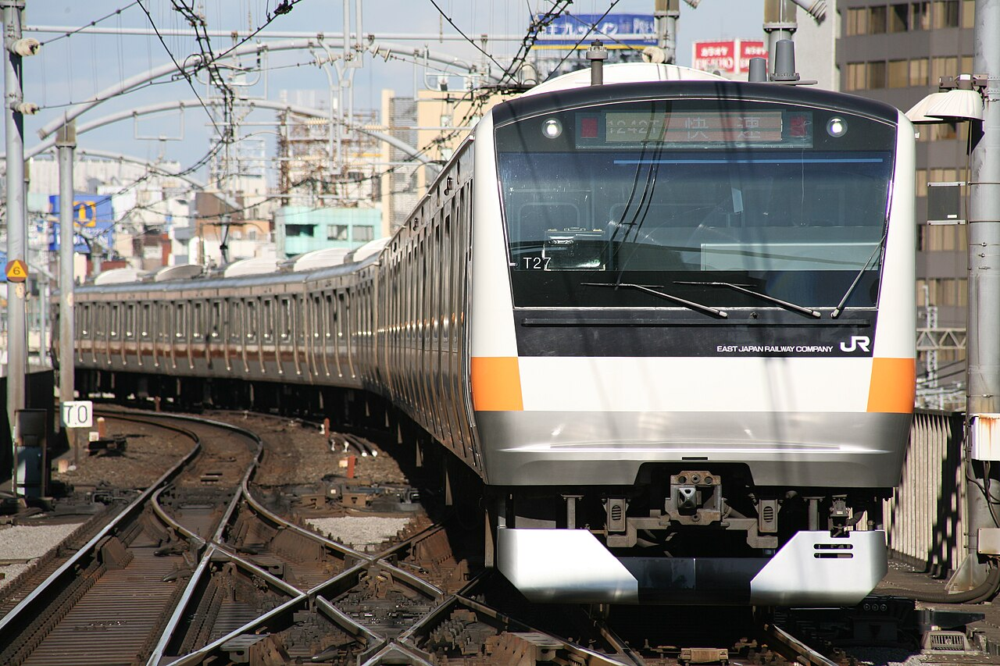

東京・JR中央線の快速電車。いちばん混む区間では、ラッシュの1時間に30本の電車が走ります（国土交通省の資料、2017年度）。単純に割れば、2分に1本。ホームで1本見送っても、すぐに次の電車が入ってきます。
遠くへ走る新幹線も同じです。東海道新幹線の遅れは、雪や台風などの影響も含めて、1列車あたり平均1.6分でした（JR東海、2023年度）。何百本もの電車が、なぜここまで時刻どおりに走れるのでしょうか。

朝のラッシュでも、ホームには2分おきに電車がやってきます。その裏には、15秒刻みで描かれる運行計画、運転台に置かれた懐中時計、そして遅れを見張る指令所がありました。運行計画の図と写真で、秒を守るしくみをのぞいてみませんか。
東京・JR中央線の快速電車。いちばん混む区間では、ラッシュの1時間に30本の電車が走ります（国土交通省の資料、2017年度）。単純に割れば、2分に1本。ホームで1本見送っても、すぐに次の電車が入ってきます。
遠くへ走る新幹線も同じです。東海道新幹線の遅れは、雪や台風などの影響も含めて、1列車あたり平均1.6分でした（JR東海、2023年度）。何百本もの電車が、なぜここまで時刻どおりに走れるのでしょうか。
運行計画を15秒刻みで組み、運転士が時計と指差しで確かめ、指令所が遅れを見つけしだい直し続けているから。
駅に貼られた時刻表は「8時02分」のように分までしか書かれていません。でも、鉄道会社の中で使われる計画は、もっと細かく刻まれています。それが「ダイヤ」です。もとは英語の「ダイヤグラム（図表）」で、横に時刻、縦に駅をとり、1本1本の電車の動きを線で描いた図のことです。
平凡社の『世界大百科事典』によると、この図には時刻の刻み方の違うものがあり、目盛りが細かい「2分目」のダイヤは15秒単位で運転時刻を表せるため、実際の作業計画に広く使われています。山手線のように電車が密に走る線では、さらに細かい「1分目」のダイヤも使われるとされています。
この線を引く担当者は、鉄道の世界で「スジ屋」と呼ばれます。駅と駅のあいだの走る時間、乗り降りにかかる時間、前後の電車との間隔、折り返しの時間。たくさんの条件を満たすように線を並べていく、職人のような仕事です（JR西日本の広報誌『Blue Signal』より）。
秒まで決めた計画を、だれが守るのか。まずは運転士です。東海道新幹線の運転台には、1964年の初代0系から最新のN700Sまで、すべての車両に懐中時計を置く場所が設けられています（雑誌『サライ』2024年の取材記事）。
運転士に会社から貸し出されるのは、ずれが1か月に平均±15秒ほどのクオーツ式の鉄道時計です。毎朝、乗務の前に職場の電波時計で時刻を合わせるのが、運転士の基本の仕事だといいます。前を見たまま、目の端で秒を確かめられるように、腕時計ではなく運転台の決まった場所に置くのです。
もうひとつの道具が「指差喚呼（しさかんこ）」です。信号や時計を指でさし、「出発、進行」のように声に出して確かめます。日本で20世紀の初めに生まれたとされる方法で、鉄道総合技術研究所の1994年の実験では、簡単な作業での間違いが約85%減ったと報告されています（Wikipedia 英語版「Pointing and calling」）。
指をさし、声に出し、耳で聞く。目で見るだけより多くの感覚を使うことで、見落としや思いこみを減らすと考えられています。ニューヨークの地下鉄も、1996年から車掌がドアを開ける前に指差しをするようになりました。
どんなに準備しても、遅れはゼロにはなりません。大事なのは、小さな遅れが後ろの電車へ広がる前に手を打つことです。その司令塔が、線路全体を見わたす「指令所」です。
JR東日本では、1987年の発足当時、指令員や駅員が手作業の信号の操作や電話のやりとりで運行を管理していた線区が、全体の約92%を占めていました。そこで1996年、中央線から「ATOS（東京圏輸送管理システム）」を使いはじめます。どの電車がいまどこを走っているかをコンピューターで一度に見わたし、ポイント（線路の分かれ目）の切りかえも自動で行うしくみで、2014年には首都圏の20線区、約1,270kmに広がりました（日立評論、2014年）。
組みかえは、見た目ほど簡単ではありません。新幹線の運行管理を研究する富井規雄さんの2010年の論文によると、新幹線には基本的に予備の車両や乗務員がほとんどなく、当時の東海道新幹線の東京駅では、ホーム6本の線路から混む時間帯に1時間14本が発車していました。少ない手持ちで回しているからこそ、遅れが出たときの組みかえには、指令員の経験と訓練が欠かせないのです。
それでも、都市の電車は毎日のように少しずつ遅れます。国土交通省は、東京圏の45路線について遅れの原因を調べています。2018年11月の平日21日間に起きた10分未満の小さな遅れを分けてみると、いちばん多かったのは故障でも事故でもなく、乗り降りに時間がかかったことでした。
2分おきに電車が来る線では、1つの駅で乗り降りが20秒延びると、その20秒が後ろの電車にも順に伝わっていきます。同じ資料では、JR中央線快速の遅延証明書（おおむね5分以上の遅れで出されるもの）が、朝の時間帯に平日20日あたり19日も出ていました（2018年度）。秒単位の計画は、満員のホームの数十秒と毎日せめぎあっているのです。
JR中央線快速が、いちばん混む区間を1時間に走る本数国土交通省の資料（2017年度）
東海道新幹線の、1列車あたりの平均の遅れJR東海（2023年度、自然災害などによる遅れも含む）
指差喚呼で減った、簡単な作業での間違い鉄道総合技術研究所の実験（1994年）
2017年11月14日、つくばエクスプレスの南流山駅で、9時44分40秒に出るはずの電車が、9時44分20秒に発車しました。わずか20秒の「早発」です。客からの苦情はなかったとされますが、運営会社はお詫びを発表し、海外のニュースでも話題になりました。翌2018年5月には、JR西日本の能登川駅で25秒早く出た新快速についても、会社がお詫びを出しています。
大げさに見えるかもしれません。でも、遅れた電車は待てば来ますが、早く出た電車には、時刻どおりに来た人が乗れません。国の省令「鉄道運輸規程」も、時刻表で示した列車を、その時刻より前に出発させてはならないと定めています。もとになった規則は、1900年（明治33年）にまでさかのぼります。
秒単位の運行は、速く走るための技術というより、乗る人との「約束」を守るためのしくみなのかもしれません。次に駅の時刻表を見たら、「分」の後ろに隠れた何十秒かを想像してみてください。